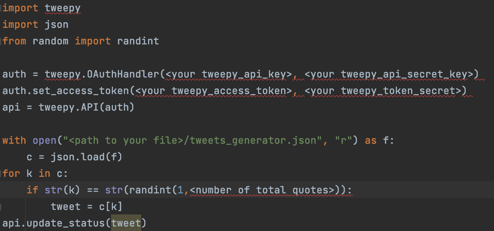
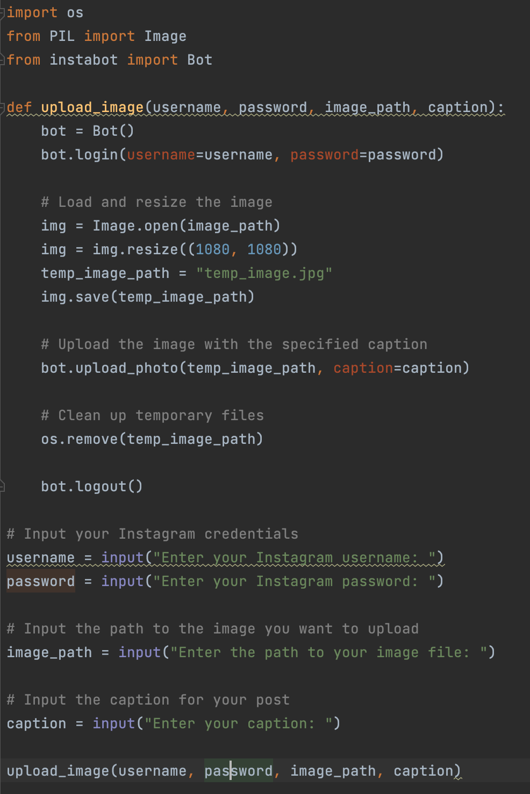
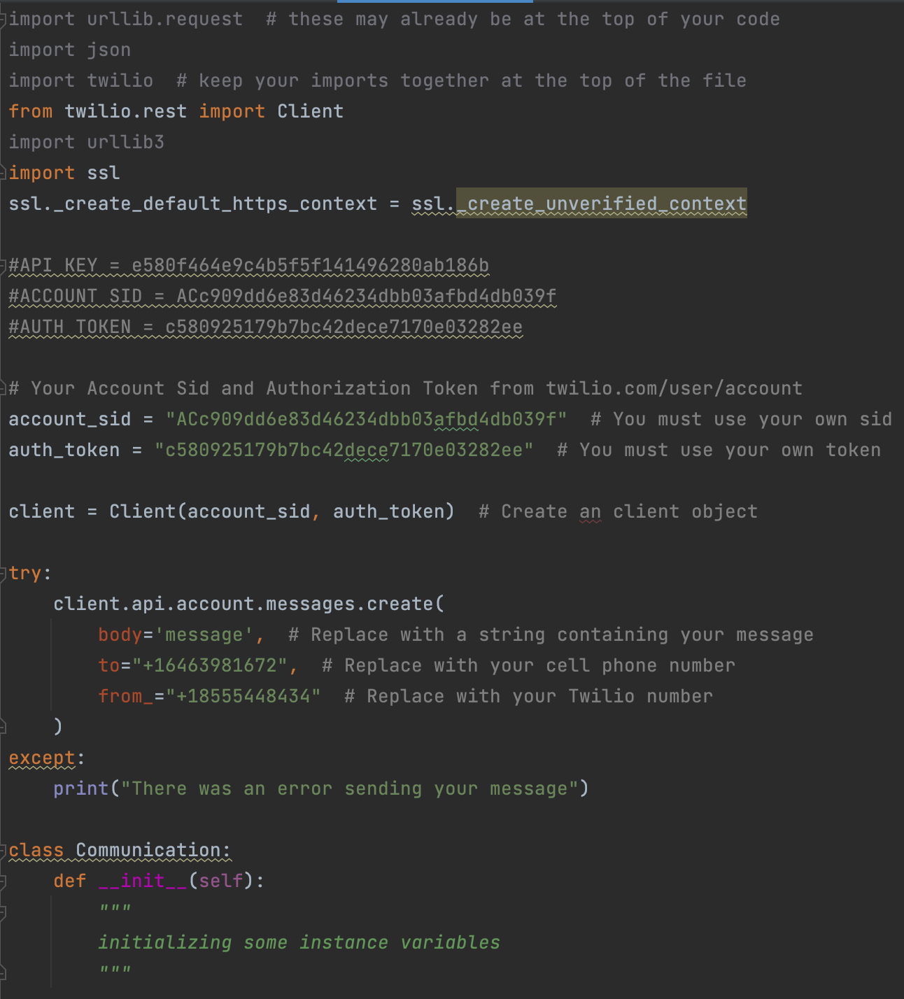
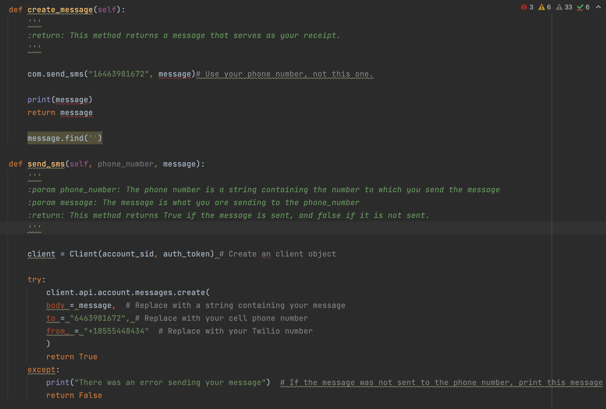
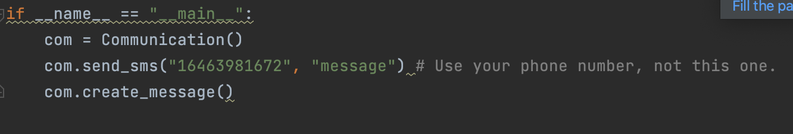

So far, I have been working on making a Twilio account and getting the details of that set up. Before I work on automating a text message scheduled by someone else, I feel like the best place to start is by establishing how to do it for myself. However, the one issue I have faced thus far is that I can not plug in alternate phone numbers. For some reason, it currently does not want to work, so now my next step is trouble shooting that.
Entry (November 3,2023): I have been studying the Twilio in and outs through their website to gain further knowledge on the topic. In addition to this, I have mastered how to send messages to my phone and others' phones, but I am facing two challenges: how to not have it say "Sent from your Twilio trial account" before every message and have the code work through the non Twilio website (when I put it into my actual pycharm and not on the Twilio website, it claims that Twilio does not exist though I had previously installed it to my library).
Entry (November 17,2023): I have now made it so that I can send a text from one number to the next; however, I might go back an tweak it later. The process for inputting the information and sending it with Twilio is a little clunky, and may be something I revisit later on.
Entry (December 8,2023): I have moved on to working on the X (Twitter) portion of my project. IN doing so, I am using a system called Tweepy (which is a Python wrapper for the Twitter API) to aid in the process. While I have set up some base code (which is featured below), my next step would be to create a Twitter account in order to create a Tweepy API access token and key. I tried to find a way around this, yet I was unsuccessful so far.
Entry (February 8, 2024): Especially as APIs are complicated, I have talked with Mr. Golanka about the possibility of condensing my project down to just an Instagram and a text component. However, this is not set in stone and will be decided at a later date. In terms of what I have done, I have mainly been working to create my Instagram component. It works so that the code can be used to automatically post from an account. The one element that I have not yet sorted out is the timer. I need to set up a timer to include the "scheduling" component of the posting, and that is something I will likely work on that in the coming weeks.
Entry (February 8, 2024 (Continued)): In addition to the Instagram component, I have been working to debug and rearrange my text code. As I am using a previous programming assignment (using Twilio) as a base, I need to reorder some of the previous code in order for it to function properly. I have been working to debug these errors one by one, but I will likely set up a proper meeting with Mr. Golanka to really make sure that it is correctly coded.
  